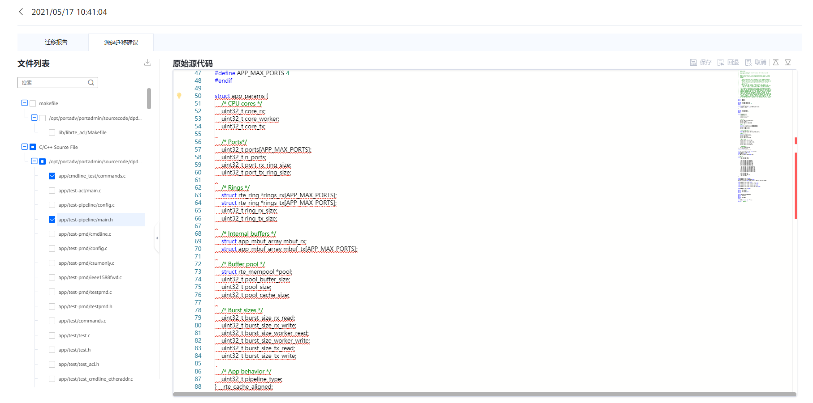

前提条件
已成功完成任务分析。
操作步骤

若用户需要在原始代码中进行修改操作，务必随时对编辑的源码进行保存,否则可能会因为会话超时而丢失修改的代码。
- 在“迁移报告”的操作中直接单击“查看建议源码”可直接跳转到“源码迁移建议”中。
- 单击“源码迁移建议”页签，查看“源码迁移建议”。图1 源码迁移建议
表1 源码迁移建议参数说明 参数
说明
文件列表
分析的源码文件名称。
原始源代码
原始源代码。

- 用户可以直接在原始源代码中进行修改，修改完之后，可单击右上角的保存，回退或取消。
- 用户可以将鼠标置于有红色波浪线的代码上，在悬浮的提示中单击Quick Fix自动添加右侧的源码建议（可选择“在本文件中应用该类修改”对同类问题进行批量修改）。
- 选中左侧的文件，单击下载按钮可下载用户所需要的源码文件。
- 汇编不支持迁移修改后再次扫描；如果扫描，会导致分析结果不准确。